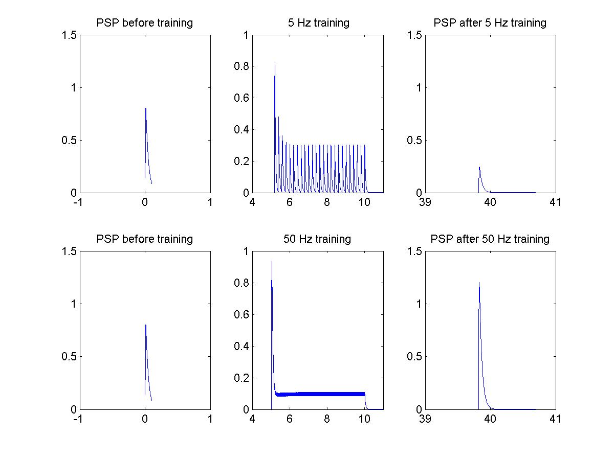

This is the readme for the model code associated with the paper:
Migliore M, Lansky P (1999) Long-term potentiation and depression induced
by a stochastic conditioning of a model synapse. Biophys J 77:1234-43
ABSTRACT Protracted presynaptic activity can induce long-term potentiation
(LTP) or long-term depression (LTD) of the synaptic strength. However,
virtually all the experiments testing how LTP and LTD depend on the
conditioning input are carried out with trains of stimuli at constant
frequencies, whereas neurons in vivo most likely experience a stochastic
variation of interstimulus intervals. We used a computational model of
synaptic transmission to test if and to what extent the stochastic
fluctuations of an input signal could alter the probability to change the
state of a synapse. We found that, even if the mean stimulation frequency
was maintained constant, the probability to induce LTD and LTP could be a
function of the temporal variation of the input activity. This mechanism,
which depends only on the statistical properties of the input and not on
the onset of additional biochemical mechanisms, is not usually considered
in the experiments, but it could have an important role to determine the
amount of LTP/LTD induction in vivo. In response to a change in the
distribution of the interstimulus intervals, as measured by the
coefficient of variation, a synapse could be easily adapted to inputs that
might require immediate attention, with a shift of the input thresholds
required to elicit LTD or LTP, which are restored to their initial
conditions as soon as the input pattern returns to the original temporal
distribution.
The quickbasic program was provided by Michele Migliore.
It produces the 5 hertz trace Fig.1B if run.The parameter freq sets the
frequency. Change to 50 and run again to see other traces. Here is
a graph prepared with matlab from files written by the basic program
(11/16/2005):

To write the data to a file uncomment the PRINT #1 statement at the
end.
Quickbasic is available for download as part of a package from
Microsoft
or from other links
and will run on any Microsoft windows operating system.
Paper variables correspondance with variables in the program:
quickbasic paper
--------------------------
prob p, the instantaneous probability of a spike occurring
presynaptically (synaptic activation of the postsynaptic
cell)
freq omega (average frequency)
tt the period corresponding to omega
ts the period corresponding to omega_s
mult This is the factor between omega and omega_s in the paper
CC membrane potential
--------------------------